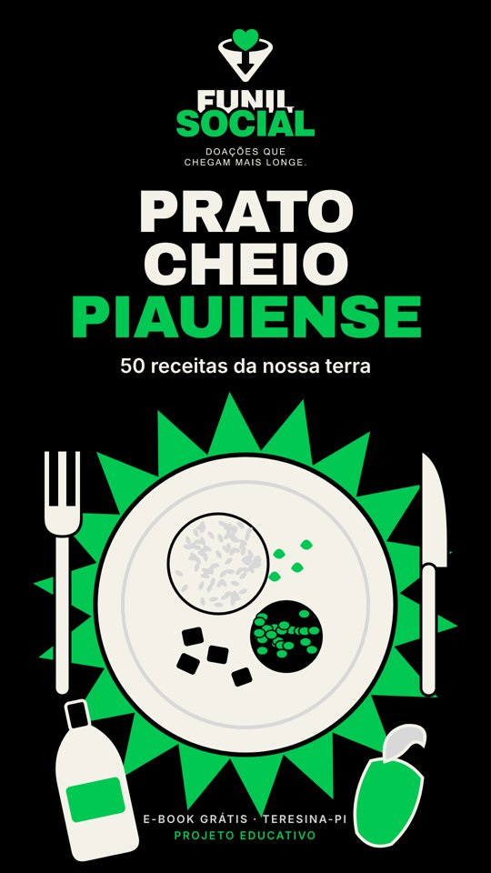

50 receitas do Piauí que enchem o prato
Da Maria Isabel à cajuína caseira: o Prato Cheio Piauiense reúne receitas da nossa terra, com passo a passo simples e ingredientes que você acha no mercado.
- 50 receitas em 6 categorias, do café à sobremesa
- Selo "rende muito" nas que servem 8 pessoas ou mais
- Feito para ler no celular
Mande um oi no nosso WhatsApp e a gente responde com o link do e-book.
Receber pelo WhatsAppAo mandar a mensagem, você concorda em conversar com o Funil Social pelo WhatsApp. Veja a política de privacidade.

Do cuscuz à cajuína
Pratos principais
Maria Isabel, capote ao molho, carne de sol com macaxeira, arroz com pequi e mais.
Peixes e acompanhamentos
Piau frito, peixada, baião de dois, quibebe de jerimum, "carne" de caju.
Café, doces e bebidas
Cuscuz, bolo de puba, doce de buriti, paçoca de castanha, cajuína caseira.
Comida boa é para todo mundo
O Funil Social é um projeto de extensão de Teresina que olha para a fome e para as famílias em situação de vulnerabilidade. Receita que rende bem é receita que dá para dividir.
Ao mesmo tempo, o projeto ensina marketing digital para quem tem um projeto local. Este e-book é a nossa isca digital: um presente útil que abre a conversa antes de qualquer pedido.
🎓 Projeto educativo
No fim do funil existe uma página de doação, mas ela é uma simulação: nenhum valor é cobrado e nenhum dado de pagamento é pedido. A ideia é mostrar como cada etapa funciona.
Você está dentro de um funil
Esta página é a etapa 2. Repare: ela oferece algo de valor, pede só o necessário e explica o que acontece com os seus dados.
- Post no Instagram
- Página do e-book (você está aqui)
- E-mail e WhatsApp automáticos
- Doação simulada
- Agradecimento e métricas
Perguntas rápidas
É grátis mesmo?
Sim. Você só informa o nome e o e-mail, ou chama a gente no WhatsApp.
Vou receber spam?
Não. Enviamos o e-book e poucas mensagens do projeto. Todo e-mail tem um link para cancelar.
As receitas têm fonte?
Sim. Cada receita traz no rodapé o site ou a instituição de onde veio.
A doação é de verdade?
Não. É um projeto educativo e a página de doação é uma simulação. Nada é cobrado.